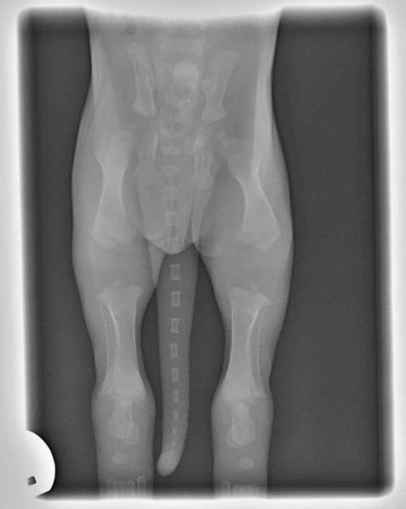

Når man får en hvalp er der rigtig mange informationer om hvad der er godt og mindre godt for hvalpen. Her er der samlet nolge punkter som er vigtige at vide samt lidt tips og tricks til at få en god start med den nye hvalp.
Du skal bruge rigtig meget tid med hvalpen det første stykke tid, så den kan vænne sig til det nye hjem og rutiner. Det anbefales at have ferie i 3 uger, så man kan få den bedste start med hvalpen
Legetøj, der laver lyde kan være farlige hvis de bliver slugt
Du skal være klar på at hvalpen skal ud og tisse i løbet af natten, måske hver 2./3. time. Det er meget forskelligt, men vær klar på lidt nattesøvn!
Aldrig skæld hvalpen ud over et uheld, den vil ikke kunne forbinde det med en årsag og hvis den ved det er fordi den har tisset indenfor, så kan det bare resultere i at hvalpen kun tisser når du ikke er tilstede
Når man lige har fået en hvalp, vil man gerne vise den frem til alle og enhver, men lad være med at få huset overrendt af gæster de første 3-4 dage, da dette kan stresse hvalpen, da den ikke er tryg hos dig endnu
Hos de store racer tror alle at de skal have masser af motion og lange ture. Dette er en stor misforståelse. Hos nogle af de store racer, såsom Leonbergeren, er knoglerne faktisk ikke vokset sammen endnu. Der er et stort stykke mellem knoglerne, hvor der kun er brusk og sener. Man siger i stedet at man skal gå 1 minut pr. dag pr. uge gammel. Dvs. en 8 ugers hvalp må gå 8 minutter om dagen. Så kommer træning og leg oveni selvfølgelig! (indsæt billede af knoglerne)

Tips og tricks
Brug rustfrit stål til mad og drikke skåle, så de ikke går i stykker eller absorbere lugte
Giv hvalpen det foder som opdrætter brugte, da dette er bedst for hvalpens mave. Vil du skifte fodr skal du langsomt erstatte det gamle med det nye. Dette tager ca. 14 dage
For at sørge for hvalpen får nok vand, kan du hælde vand på maden, men kun så længe den spiser det med det samme og ikke lader det ligge i skålen
Brug samme dør hver gang du skal ud med hvalpen
Hold hele tiden øje med hvalpen og vær sammen med den ofte, specielt hvis den kigger på dig – det er her du skal danne jeres bånd!
Hvis hvalpen snuser rundt i cirkler, så kan det være tegn på den skal ud og hvis den lige har spist, drukket, leget eller sovet, er sandsynligheden meget stor, så tag hvalpen ud med det samme
For at halsbåndet er komfortabelt skal der være plads til 2 fingre mens hvalpen har det på. Brug evt. et justérbart halsbånd